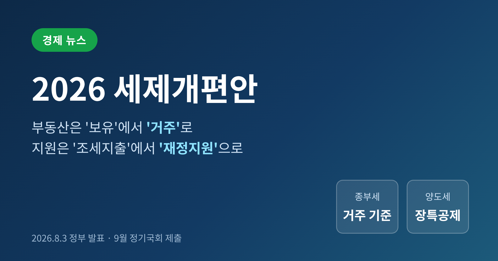
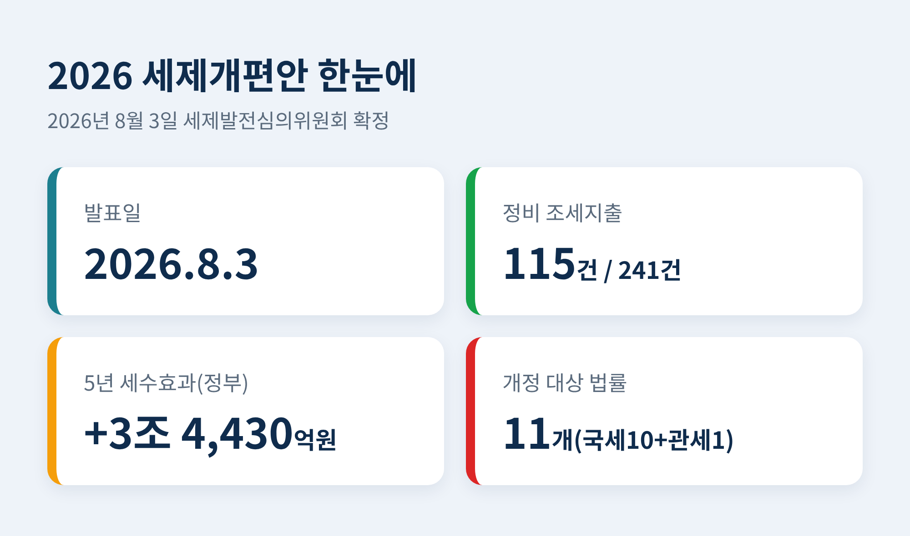
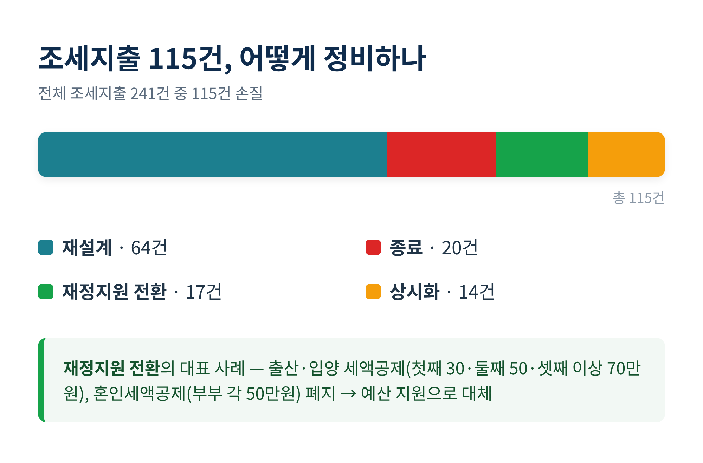
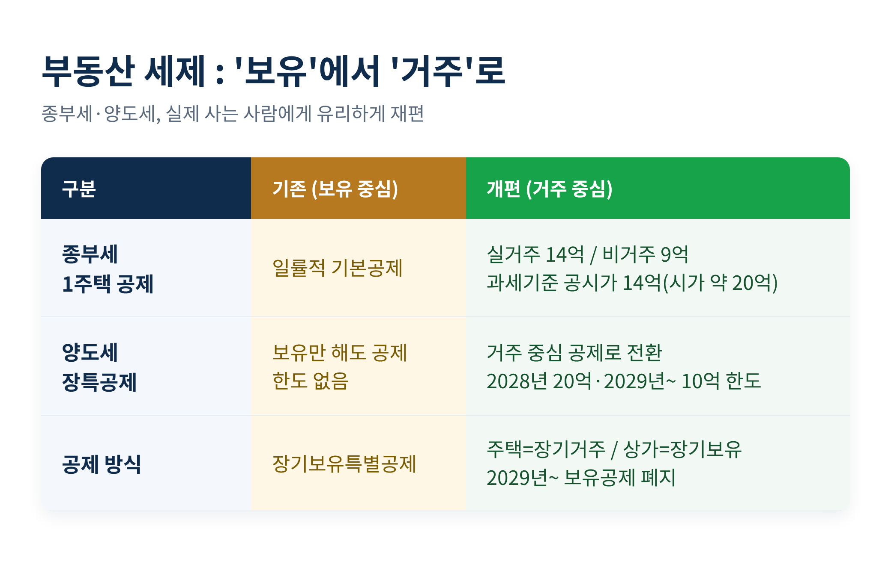
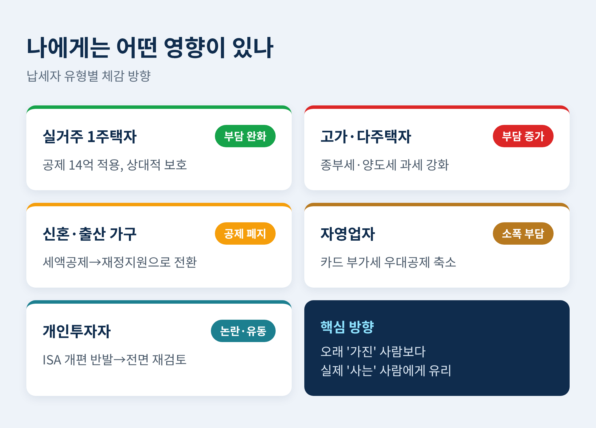
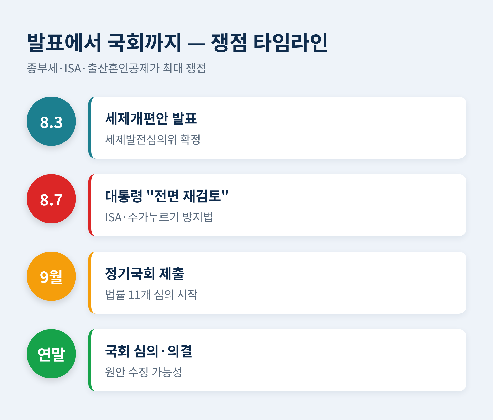

이번 글에서는 2026년 8월 3일 정부가 발표한 세제개편안을 정리해 보겠습니다.
무엇이 달라지는지, 왜 논란이 되는지, 국회에서 어떻게 될지를 차례로 짚어봅니다.
※ 이 글은 세제 변화를 이해하기 위한 정보 정리이며, 특정 투자나 절세 상품을 권유하는 글이 아닙니다.
정부는 2026년 8월 3일 세제발전심의위원회를 열어 「2026년 세제개편안」을 확정했습니다.
핵심은 두 개의 전환입니다.
하나는 부동산 세제를 '주택 수'가 아니라 '주택 가액' 중심으로, '보유'가 아니라 '거주' 중심으로 바꾸는 것입니다.
다른 하나는 세금을 깎아주던 방식, 즉 조세지출을 대폭 줄이고 그 자리를 재정지원으로 대신하는 것입니다.
개정 대상 법률은 국세 10개와 관세 1개를 합쳐 모두 11개입니다.
정부는 이 법안들을 9월 정기국회에 제출할 예정입니다.
이번 개편이 중요한 이유는 두 가지입니다.
첫째, 집을 가진 사람과 가지려는 사람 모두의 세금 셈법이 바뀝니다.
종부세와 양도세의 기준이 '보유'에서 '거주'로 이동하기 때문입니다.
둘째, 그동안 세금을 깎아 지원하던 여러 제도가 사라지거나 예산 지원으로 바뀝니다.
출산·혼인 공제처럼 많은 사람이 체감하던 항목이 여기에 포함됩니다.
즉 부동산을 가진 이든, 결혼과 출산을 앞둔 이든, 주식 계좌를 굴리는 이든 한 번쯤은 영향을 받는 개편입니다.

이번 개편에서 가장 자주 등장한 표현이 '조세지출의 재정지원 전환'입니다.
말이 딱딱하지만 뜻은 단순합니다.
지금까지는 특정 계층을 돕고 싶을 때 세금을 깎아주는 방식을 많이 썼습니다.
이 세액공제·감면을 통틀어 조세지출이라 부릅니다.
문제는 이 돈이 국회의 예산 심사 밖에서 빠져나간다는 점이었습니다.
'숨은 보조금'이라는 비판이 오래 따라다녔습니다.
그래서 정부는 방향을 틀었습니다. 세금은 정상적으로 걷되, 지원이 필요하면 예산으로 직접 주겠다는 것입니다.
이번에 전체 조세지출 241개 가운데 115개를 손봅니다.
종료 20건, 재정지원 전환 17건, 재설계 64건, 상시화 14건입니다.
대표적인 사례가 출산·혼인 관련 공제입니다.
지금은 출산·입양 자녀에게 첫째 30만원, 둘째 50만원, 셋째 이상 70만원을 세액공제해 줍니다.
혼인신고를 한 부부에게는 각각 50만원을 한 번 공제해 줍니다.
개편안은 이 두 공제를 폐지하고 재정지원으로 바꿉니다.
정부는 "예산으로 더 두텁게 도울 수 있다"고 설명합니다.
다만 저출생 대응의 상징이던 공제를 없앤다는 점에서, 체감상 '혜택 축소'로 읽힐 여지는 남습니다.

부동산 세제의 방향은 분명합니다.
실제로 사는 1주택자는 보호하고, 고가·비거주·다주택에는 부담을 더 지운다는 것입니다.
종합부동산세부터 봅니다.
1세대 1주택자의 과세기준은 공시가격 14억원, 시가로는 약 20억원 초과로 정해졌습니다.
기본공제는 실거주하면 14억원, 거주하지 않으면 9억원으로 갈립니다.
같은 집이라도 사느냐 아니냐에 따라 세금이 달라지는 구조입니다.
양도소득세의 장기보유특별공제도 크게 바뀝니다.
기존에는 오래 보유하기만 해도 공제를 받았습니다.
앞으로는 주택은 '장기거주소득공제', 상가 등은 '장기보유소득공제'로 나뉩니다.
공제 한도도 새로 생깁니다. 2028년에는 20억원, 2029년부터는 10억원으로 묶입니다.
2029년부터는 보유기간에 따른 공제가 사라지고, 거주기간에 따른 공제만 남습니다.
예전엔 '얼마나 오래 갖고 있었나'가 기준이었습니다.
지금은 '얼마나 오래 살았나'가 기준입니다.
시장에서는 벌써 셈법이 복잡해졌습니다.
전세를 주고 다른 곳에 사는 이른바 갭 보유자, 상속으로 얼떨결에 여러 채를 갖게 된 이들이 특히 민감하게 반응합니다.
제도가 2028년과 2029년에 걸쳐 단계적으로 시행되는 만큼, 언제 팔고 언제 들어가 사느냐에 따라 세금이 달라질 수 있습니다.

기업 쪽에는 지원이 붙습니다.
국내생산 기반이 약한 품목에 대해 생산량에 따라 소득세·법인세를 깎아주는 국내생산세액공제가 새로 생깁니다.
국가전략기술의 범위는 수소를 넘어 '미래형 에너지'로 넓어집니다.
친환경차도 갈립니다. 업무용 승용차 감가상각 한도가 전기·수소차는 연 1,000만원으로 오르고, 내연차는 연 700만원으로 내려갑니다.
반면 하이브리드차의 개별소비세 감면은 종료됩니다.
서민·청년을 위한 장치도 있습니다. 근로장려금과 월세 세액공제가 확대되고, 생산적금융 ISA가 새로 도입됩니다.
자영업자에게는 부담이 조금 늘어납니다.
신용카드 매출에 대한 부가가치세 우대공제율이 1.3%에서 1.2%로 내려가고, 연 1,000만원이던 우대 한도는 폐지됩니다.
투자자 반응은 가장 뜨거웠습니다.
정부는 생산적금융 ISA를 새로 만들면서 기존 ISA의 납입기간과 한도를 손보려 했습니다.
그런데 기존 혜택이 줄고 해외투자 선택권이 좁아진다는 점이 알려지자 개인투자자들이 강하게 반발했습니다.
"국장만 하라는 거냐"는 불만이 쏟아졌습니다.
세금 하나를 바꾸는 일이 곧 수많은 사람의 자산 계획을 흔든다는 사실이 다시 확인된 셈입니다.

세수 전망은 숫자가 엇갈립니다.
정부는 이번 개편으로 5년간 세수가 약 3조 4,430억원 순증할 것으로 봅니다.
가장 많이 늘어나는 세목은 종부세로, 5년간 약 2조 1,815억원입니다.
반면 나라살림연구소는 정비 항목을 넓게 잡아 5년 효과를 약 13조 3,000억원으로 추산하며, "원칙을 잃고 복잡해진 조세체계"라고 비판했습니다.
계산 범위가 달라 생긴 차이입니다.
정치 국면은 더 요동쳤습니다.
정부·여당 일부는 "조세 정상화"라 부르고, 야당은 "세금폭탄 선언"이라 규정하며 정면충돌했습니다.
결정적 장면은 발표 나흘 뒤에 나왔습니다.
이재명 대통령이 8월 7일 상황점검 회의에서 ISA 개편안과 '주가누르기 방지법'에 대해 "전면 재검토"를 지시한 것입니다.
"정확하게 준비도 하지 않고 왜 그렇게 한 것이냐"는 질책도 있었다고 전해집니다.
여당 안에서도 "정신 차리라"는 말이 나왔고, 야당은 "비겁한 책임 회피"라고 받아쳤습니다.
발표 직후 대통령이 직접 제동을 건 것은 이례적입니다.
부동산 과세, ISA, 출산·혼인 공제 폐지처럼 민감한 항목이 많은 만큼, 9월 국회에서 원안 그대로 통과되기는 쉽지 않아 보입니다.

정리하면 이렇습니다.
2026년 세제개편안은 부동산은 '거주 중심'으로, 지원은 '재정 중심'으로 방향을 틀었습니다.
방향에는 명분이 있지만, 속도와 준비에는 물음표가 붙었습니다.
세제는 결국 숫자가 아니라 납세자의 예측 가능성으로 완성됩니다.
그 신뢰를 이번 개편이 지켜낼 수 있을지는, 9월 국회의 몫으로 남았습니다.